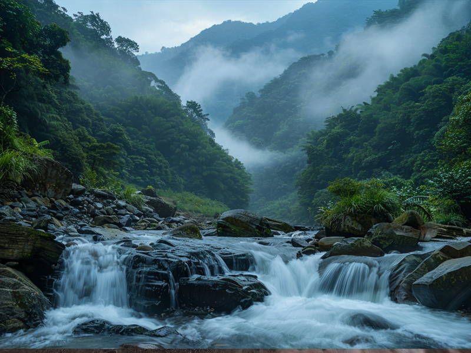
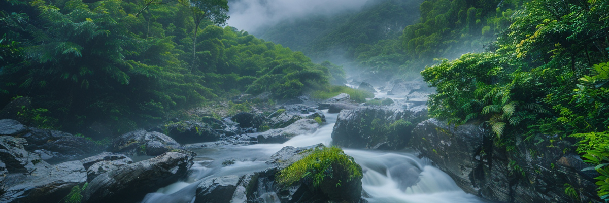

我們堅持選擇南投水源地，這裡擁有得天獨厚的地理環境與純淨山泉，為每一瓶客製水注入靈魂。

水源經過層層岩層自然過濾，富含微量礦物質，口感甘甜滑順，是真正的好水。
水源地遠離工業區與污染源，確保每一滴水都保持最原始的純淨狀態。
從水源採集到裝瓶，全程自動化生產，並通過多項國家級水質檢驗。
成品儲存於通風乾燥的恆溫倉庫，確保水質在交付到您手中前始終如一。
多年深耕南投，與當地水源保護區建立長期合作，穩定供應高品質水源。
我們不只賣水，更賣一份對品質的堅持。讓這份來自南投的清甜，成為您品牌形象的最佳註解。
